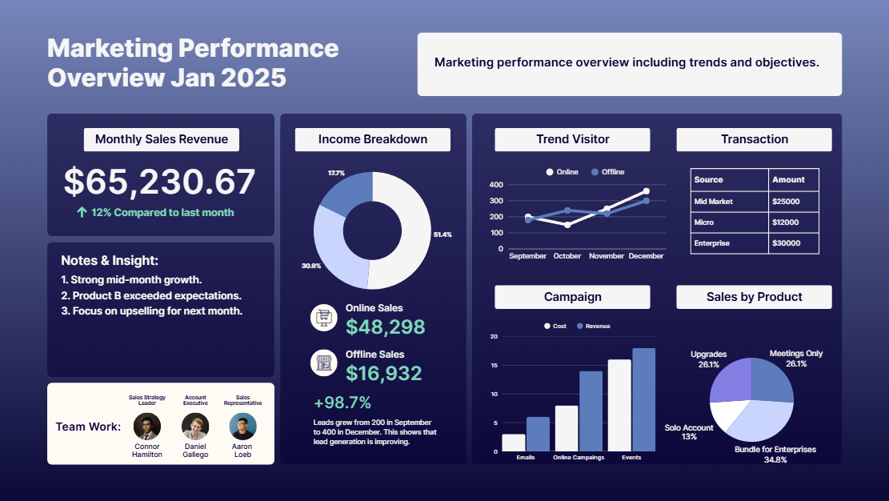

Project Overview
This dashboard analyzes marketing performance metrics including revenue,
campaign effectiveness, lead generation, and visitor trends.
The report provides marketing teams with actionable insights
to evaluate campaign ROI and identify growth opportunities.
Key metrics include monthly revenue, lead generation trends,
campaign performance, and product sales distribution.
Tools Used
- Power BI
- Marketing Analytics
- Data Visualization
- Business Intelligence Reporting
Key Insights
-
Email campaigns generated the highest conversion rate compared to other channels,
contributing significantly to total revenue growth.
-
Lead generation increased steadily from September to December, indicating improved
marketing funnel efficiency and campaign targeting.
-
Enterprise clients contributed the largest share of transaction value,
highlighting the importance of focusing on high-value customer segments.
-
Campaign performance analysis showed that event-based marketing delivered
higher ROI compared to email-only campaigns.